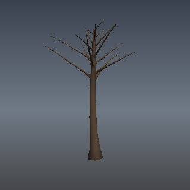
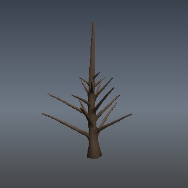
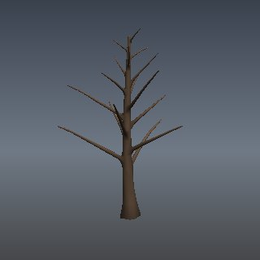
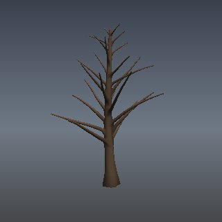
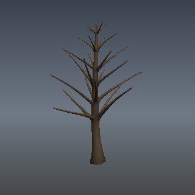

Generators and placement
This page explains how to add, arrange and remove generators, and how the settings in the Generation section decide how many children grow on a parent and where.
Adding a generator
- Select the parent in the Generation list. To add a trunk, the selection doesn't matter.
- Click + Trunk, + Branches, + Roots or + Leaves below the list, or use the Generators menu.
- The new generator is selected, so you can adjust it in the Properties panel straight away.
Buttons that don't apply to the selection are dimmed: leaves can't carry children, and roots can only grow on a trunk. Branches added to a branch generator start with shorter, thinner defaults suited to twigs; branches added to roots start as side roots.
Selecting, renaming and switching off
- Click a generator in the list or click its part of the tree in the viewport to select it. The selected generator is briefly highlighted in the viewport.
- Type a new name in the field at the top of the Properties panel. Names appear in the list and as mesh and material names in exports.
- Clear the check box in front of a generator, or the On box in the Properties panel, to switch it off. Everything that grows on it disappears too, but all settings are kept.
- The Material menu at the top of the Properties panel assigns a material. See Materials and textures.
Removing a generator
Select the generator and click the bin button below the list, choose Edit › Delete Generator, or press Delete or Backspace while no text field is being edited. The generator and every generator below it are removed. Use Undo to restore them.
Generation settings

- Trunks 1 to 24
- Trunk generators only: the number of trunks growing from the ground. Several trunks are spread around the origin, as in a shrub or a multi-stemmed tree.
- Count per parent 0 to 120
- How many children grow on each stem of the parent. For leaves this is the number of leaves per stem. A curve on this setting (density) thins children out along the parent.
- Start and End 0 to 1
- The part of the parent where children grow, from 0 at the base to 1 at the tip. A start of 0.3 keeps the lowest 30 percent of the trunk free of branches.
- Phyllotaxis 0° to 360°
- The turn around the parent from one child to the next. 137.5°, the golden angle, spreads children evenly in all directions as in many real plants. 180° places them on alternating sides.
- Per node (whorl) 1 to 8
- How many children start at the same height. 1 gives alternate branching, 2 opposite pairs as in maples, and 3 or more whorls as in pines and firs. The count per parent is shared among the nodes.
- Randomness 0 to 1
- How much the position and the turn of each child deviate from the regular pattern.
- Spacing (0 = count) 0 to 5 m
- When above 0, children are placed at this distance along the parent instead of using the count. Long parents then carry more children than short ones, which keeps the density even across the tree.





Tip To make the lower branches of a tree shorter or the crown denser at the top, combine Start and End with a curve on Length or Count per parent. See Curves.